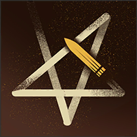

Helden › Assassine
Mirage
Mirage ist ein spielbarer Held in Deadlock. Der Leibwächter der Dschinn-Botschafterin Nashala Dion begleitet eine diplomatische Mission nach New York — und verwandelt sich im Gefecht in einen Wirbelsturm, dem niemand entkommt.
Hintergrund
Die Dschinn gehören zu den kuriosesten Völkern der modernen Welt. Sie besitzen große Macht in kontrollierten Dosen, können ihre körperliche Form aber nicht länger als 48 Minuten halten, ohne in einem Gefäß zu ruhen. Deshalb beschäftigen die meisten Dschinn menschliche Leibwächter für Transport, Schutz und Gesellschaft.
Mirage ist ein solcher Leibwächter. Im Dienst der Dschinn-Botschafterin Nashala Dion ist er in diplomatischer Mission in New York: Die Dschinn hoffen, der US-Regierung einen Teil Wyomings abzukaufen, um dort eine souveräne Nation für ihr Volk zu errichten.
Spielstil
Mirage hüllt sich in einen gewaltsamen Wirbelsturm, um fliehende Gegner einzuholen und in die Luft zu heben. Seine Skarabäen halten ihn gegen mehrere Feinde am Leben — und dank Traveler ist er überall auf der Karte zur Stelle, wo ein Verbündeter Hilfe braucht oder ein Gegner Strafe verdient.
Fähigkeiten
Fire Scarabs
Taste 1Befällt einen Gegner mit Feuerskarabäen, die ihm Leben stehlen und seinen verursachten Schaden senken.
Abklingzeit: 35 s
Dust Devil
Taste 2Verwandelt Mirage in einen Wirbelsturm, der vorwärtszieht, Gegner schädigt, verlangsamt und in die Luft hebt — danach weicht er Kugeln leichter aus.
Abklingzeit: 36 s
Djinn's Mark
Taste 3Waffentreffer stapeln das Dschinn-Mal; die Aktivierung zündet den gesamten aufgestauten Schaden auf einen Schlag.
Abklingzeit: 3 s
Traveler
Taste 4 UltimateMarkiert einen Ort auf der Minimap und teleportiert Mirage nach kurzer Wartezeit dorthin — erlittener Schaden unterbricht die Reise.
Abklingzeit: 140 s
Basiswerte
| Wert | Basis (Stufe 1) | Kategorie |
|---|---|---|
| Maximale Gesundheit | 730 | Vitalität |
| Gesundheitsregeneration | 1,5 / s | Vitalität |
| Lauftempo | 7 m/s | Bewegung |
| Sprint-Bonus | +1,6 m/s | Bewegung |
| Ausdauer | 3 | Bewegung |
| Leichter Nahkampfschaden | 50 | Waffe |
| Schwerer Nahkampfschaden | 116 | Waffe |
Beliebte Builds
Diese Daten stammen direkt aus dem Build-Browser im Spiel: die drei meistfavorisierten Builds für Mirage, sortiert nach der Zahl der Spieler, die sie gespeichert haben. Klick einen Build an, um die Item-Reihenfolge zu sehen.
№1 Miragepz 29.722 Favoriten
„NashALLAH“





№2 SN|P3R: Djinn’s Devastation v2 29.427 Favoriten
„→ Featured in Top Daily Builds for 10 heroes: Haze, Infernus,Wraith, Mirage, Grey Talon, Doorman, Victor, Mina, Rem & Apollo! → Feel free to max Djinn's Mark or Scarabs first, your preference!“


№3 SN|P3R: Djinn’s Devastation v2 28.784 Favoriten
„→ Featured in Top Daily Builds for 10 heroes: Haze, Infernus,Wraith, Mirage, Grey Talon, Doorman, Victor, Mina, Rem & Apollo! → Feel free to max Djinn's Mark or Scarabs first, your preference!“
Warum sind das die besten Builds?
Die drei Builds wurden zusammen über 87.933-mal von Spielern gespeichert — Favoriten sind das stärkste Qualitätssignal im Build-Browser, denn ein Build, den so viele Spieler über Monate und Patches hinweg behalten, hat sich in echten Matches bewährt. Die Builds mischen alle drei Kategorien — ein Zeichen dafür, dass Mirage flexibel gespielt wird und je nach Matchup Waffe, Überleben oder Fähigkeiten priorisiert. Als Einstieg gilt: Folge der Item-Reihenfolge des №1-Builds Kategorie für Kategorie und passe erst mit wachsender Erfahrung an dein Matchup an.
Trivia
- Mirages interner Klassenname in den Spieldaten lautet
hero_mirage. - Die Spieldaten führen den Helden mit den Tags Bodyguard, Traveller, Focused.
- Die Einstiegskomplexität liegt bei 2 von 3 — Kategorie „Fortgeschritten“.